에이전트와
컨텍스트
오늘의 일정
에이전트란
워크플로와 무엇이 다른가. 두뇌 · 계획 · 기억 · 도구 네 가지로 이루어진다.
직접 만들기
판단 · 행동 · 관찰 세 단계를 도는 루프. 멈추는 조건을 같이 만든다.
컨텍스트 엔지니어링
넣을 수 있는 양이 정해져 있다. 무엇을 넣고 무엇을 뺄지 정하는 일이다.
에이전트란
목표를 받아 대신 행동하는 자
목표 하나에 도구 셋
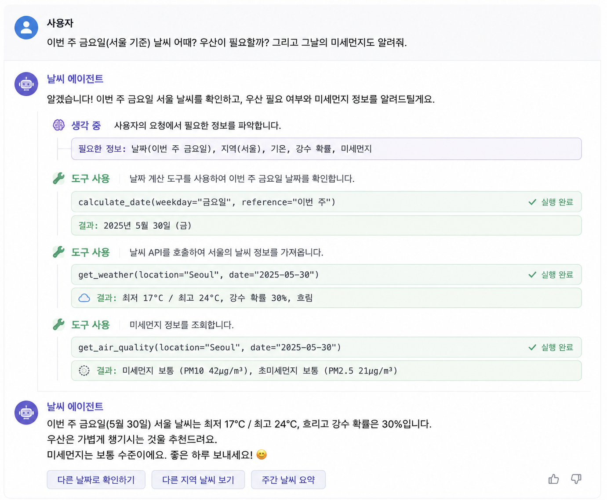
지각 → 행동 → 결과의 반복
판단을 LLM 에 맡긴 구조
정해진 경로와 그때그때 정하는 경로
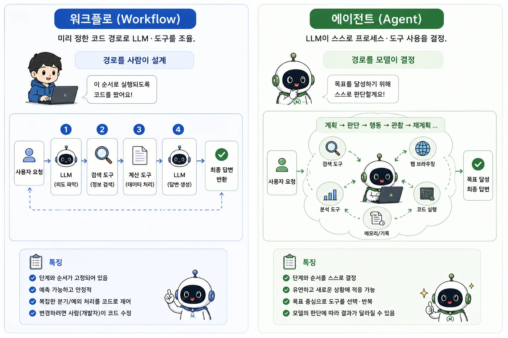
에이전트가 필요한 문제와 아닌 문제
쓸 때
경로를 미리 못 정하는 개방형 문제. 단계 수를 알 수 없을 때.
피할 때
프롬프트·검색·예시로 충분한 경우.
에이전트를 이루는 네 가지
두뇌 · 계획 · 기억 · 도구
LLM
판단의 중심.
계획
쪼개고, 되돌아본다.
기억
단기(대화)·장기(검색).
도구
바깥과 상호작용.
쪼개기와 되돌아보기
쪼개기
큰 목표를 작은 단계로 나눈다.
되돌아보기
결과를 보고 다음을 고친다.
17 × 24 를 한 줄씩 쓰게 하기
17 × 24 = 뒤에 올 법한 세 자리 수를 고르고 끝난다.# 그냥 물으면
17 × 24 = 308 # 틀림
# "자리별로 나눠 계산해줘" 를 붙이면
17 × 20 = 340
17 × 4 = 68
340 + 68 = 408 # 맞음여기까지
자릿수가 더 늘면 다시 틀리고, 중간 줄도 그럴듯하게 틀릴 수 있다. 맞았는지 확인할 방법이 없다.
모델 안에 답이 없는 네 가지
17 × 24 = 308
단계를 펼쳐야 겨우 408 이 나온다. 자릿수를 맞춰 곱하는 구조가 모델 안에 없다.
학습이 끝난 뒤
어제 바뀐 규정, 오늘 들어온 주문. 학습에 없던 일은 아예 모른다.
사내 문서
공정 기준서·설비 이력은 공개 자료가 아니다. 배운 적이 없다.
글로는 안 되는 것
메일 발송, 파일 저장, 재고 차감. 문장을 만드는 것과 다른 일이다.
도구를 붙인 쪽과 아닌 쪽
| 질문 | 모델 혼자 | 도구를 붙이면 |
|---|---|---|
| 17 × 24 는 | 308 — 틀린 답을 확신 있게 | calc("17*24") → 408 |
| 오늘이 며칠인가 | 학습 시점 기준으로 추측 | today() → 2026-08-11 |
| 연차는 며칠 전에 내나 | 일반론 — 회사마다 다르다 | search_docs("연차") → 사내 규정 |
| 3호기 어제 불량률은 | 알 수 없다 | query_db(...) → 실제 수치 |
정확성 · 최신 · 계산 · 근거 · 행동
모델에게 건네는 이름 · 설명 · 스키마
tools = to_openai_tools( # MCP→함수 스펙
await client.list_tools())
# 모델이 이 목록에서 골라 부른다직접 만들기
열 줄짜리 run_agent
while True:
msg = llm.chat(messages, tools) # 판단
if not msg.tool_calls:
return msg.content # 종료
run_tools(msg.tool_calls) # 행동·관찰판단 · 행동 · 관찰의 반복
system · user · assistant
system 은 사용자에게 보이지 않는 첫 줄 — 성격 · 규칙 · 하지 말 것.user 와 assistant 는 실제로 오간 말이다.messages = [
{"role": "system", "content": "너는 공정 데이터 비서다.
모르면 모른다고 답한다."},
{"role": "user", "content": "3호기 어제 불량률은?"},
{"role": "assistant", "content": "1.8% 입니다."},
{"role": "user", "content": "그럼 그제는?"}, # 앞 줄이 같이 가야 통한다
]system 은 사용자가 바꿀 수 없는 자리다. 지켜야 할 규칙은 여기에 적는다.도구를 언제 쓸지 정하는 첫 메시지
# 에이전트의 성격·규칙 = 첫 메시지
system = "너는 업무 비서다. 필요하면 도구로
근거를 찾아 한국어로 간결히 답하라."
messages = [{"role": "system", "content": system}, ...]도구 없이 답해도 되는 질문
루프를 빠져나오는 조건
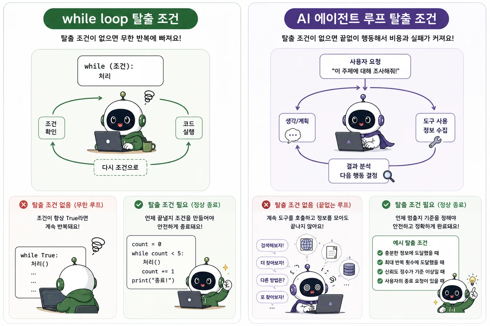
반복 한도 · 확인 · 로그
주의
자율성이 클수록 안전장치가 중요 — 한도·확인·로그는 기본.
도구를 두 번 부른 로그
Q: 3호기 어제 불량률은 몇 퍼센트야?
[도구] machine_info({'machine': '3호기'})
→ 3호기: B라인, 생산 1530개, 불량 28개
[도구] calc({'expr': '28/1530*100'})
→ 1.830065359477124
A: 3호기 어제 불량률은 1.83 퍼센트입니다.한 번에 부를 것과 앞 결과가 필요한 것
병렬 호출
“추가하고 목록 보여줘” — 도구 두 개를 한 번에 부르면 끝. 순차 판단이 아니다.
순차 의존
“마지막 할 일의 우선순위를 높음으로” — id를 알아낸 뒤라야 다음 도구를 부를 수 있다.
[루프 1] machine_info({'machine': '3호기'}) # 여기서 숫자를 얻는다
[루프 2] calc({'expr': '28/1530*100'}) # ← 앞 결과가 있어야 가능
→ 도구를 부른 루프 2회
진짜 멀티스텝 — 앞 결과를 보고 '다음' 도구를 정했다계획을 먼저 세우고 실행하기
한 질문에 일곱 줄로 자란 messages
messages = [
{"role": "system", "content": "너는 공정 데이터 비서다. ..."}, # 처음부터 있던 줄
{"role": "user", "content": "3호기 어제 불량률은?"},
{"role": "assistant", "tool_calls": [machine_info(machine="3호기")]}, # 답이 아니라 호출
{"role": "tool", "content": "3호기: B라인, 생산 1530개, 불량 28개"},
{"role": "assistant", "tool_calls": [calc(expr="28/1530*100")]}, # 앞 줄을 보고 정했다
{"role": "tool", "content": "1.830065359477124"},
{"role": "assistant", "content": "3호기 어제 불량률은 1.83 퍼센트입니다."},
]assistant)과 도구가 돌려준 것(tool)이 번갈아 쌓인다.에러를 결과처럼 되먹이기
try:
out = call_tool(tc.name, tc.args)
except Exception as e:
out = f"오류: {e}" # 죽지 말고
messages.append(result(out)) # 되먹임하나의 일 · 구체적인 설명 · 친절한 에러
대화가 깨지고 루프가 안 멈추는 이유
도구와 인자를 스텝마다 찍기
컨텍스트 엔지니어링
내가 안 써도 자라는 입력
단발 질의응답 시대
에이전트 시대
한 번에 들어갈 수 있는 토큰 수
8천 · 12만 · 백만 토큰
| 창 크기 | 한글로 | A4 로 | 비슷한 것 |
|---|---|---|---|
| 8,192 | 약 8천 자 | 4쪽 | 회의록 한 편 |
| 32,768 | 약 3만 자 | 16쪽 | 보고서 한 편 |
| 128,000 | 약 12만 자 | 64쪽 | 설비 매뉴얼 한 권 |
| 1,000,000 | 약 백만 자 | 500쪽 | 단행본 대여섯 권 · 사규집 전체 |
열두 턴에 118,400 토큰
턴 1 질문 30 · 답 120 누적 150
턴 2 질문 20 · 조회 1,200 · 답 200 누적 1,570
턴 3 질문 25 · 조회 3,400 · 답 180 누적 5,175
...
턴 12 질문 20 · 조회 9,800 · 답 240 누적 118,400 # 창이 거의 찼다잘려 나가는 앞부분
겉으로 보이는 것
아까 말한 것을 다시 묻는다. 정해 준 형식을 어긴다. 엉뚱한 도구를 부른다.
실제로 벌어진 것
앞에서부터 밀려 나가 system 의 규칙까지 사라졌다.
넣을수록 떨어지는 정확도
system 프롬프트 · 룰(CLAUDE.md)
+ tools 도구 스펙 전부
+ 파일 read_file 로 읽은 내용
+ 결과 도구 호출 결과 (에러 포함)
+ 대화 지금까지의 모든 턴
= 루프가 돌수록 계속 커진다선별 · 구성 · 배치 · 전달

토큰이라는 정해진 예산
윈도우를 두고 경쟁하는 다섯 가지
| 요소 | 원칙 |
|---|---|
| 시스템 프롬프트 | 명확하게 — 너무 구체(brittle)도 너무 추상(vague)도 아니게 |
| 도구 | 기능 중복 없이, 토큰 효율적 결과 |
| 예시(few-shot) | 엣지 나열 말고 대표 사례로 |
| 히스토리 | 동적으로 필요한 부분만 |
| 검색 결과 | 필요할 때만(just-in-time) 로드 |
앞뒤는 남고 흐려지는 가운데
기법 1 · 대화를 요약해 넘기기
# 대화가 길어지면
요약 = summarize(old_messages)
messages = [system, 요약] + recent # 새 윈도우요약 뒤에 남은 6,200 토큰
system 2,000
도구 정의 3,000
턴 1~12 주고받은 말 15,000
조회 결과 전문 98,400
합계 118,400system 2,000
도구 정의 3,000
요약 정한 것 · 못 푼 것 900
최근 두 턴 원문 300
합계 6,200messages 에 쌓는 기억과 검색해 오는 기억
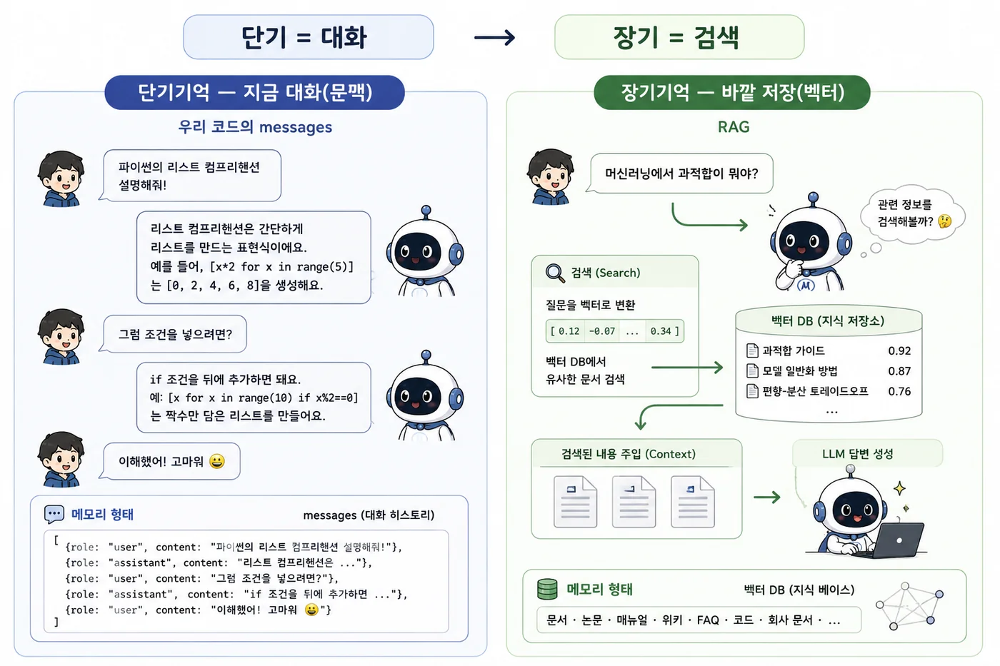
기법 2 · 컨텍스트 밖 수첩에 적기
비유
머릿속에만 담지 말고 수첩에 적는다 — 나중에 그 수첩만 다시 본다.
기법 3 · 깊은 탐색은 따로 떼기
기법 4 · 필요할 때 불러오기
# 미리: 경로만
files = list_files() # 식별자만
# 필요할 때: 내용
text = read(files[i]) # 그때 로드긴 대화 · 반복 개발 · 병렬 조사 · 잦은 변경
| 기법 | 최적 상황 |
|---|---|
| Compaction | 왕복이 많은 긴 대화 |
| 구조화 메모 | 마일스톤 있는 반복 개발 |
| 서브에이전트 | 병렬 탐색이 이득인 복잡한 조사 |
| Just-in-time | 동적·자주 바뀌는 데이터 |
한계와 원칙
유한 문맥 · 긴 계획 · 형식 신뢰성
유한 문맥
대화·도구 응답이 문맥 창을 넘치면 잊는다 → CH3.
긴 계획
여러 단계 계획·예외 조정이 아직 서툴다.
형식 신뢰성
출력이 형식을 어길 수 있다 → 검증 필요.
한도 · 확인 · 로그
안전
한도로 폭주 막고, 되돌릴 수 없는 행동은 확인받고, 로그로 감사.
원칙
단순함 · 계획을 투명하게 · 도구 문서화.
부록 — 공정 데이터로 불량 미리 잡기
표를 밖으로 내보내지 않고 Codex 로 전처리부터 웹 앱까지 붙인다.
반출 통제 · 코드 받기 · 전처리 · 검증
반출 통제
값 자체가 기밀이다. 컬럼명과 값을 바꿔 내보내는 규칙을 먼저 정한다.
코드만 받기
표를 통째로 올리면 유출이다. 모양만 보내고 코드를 받는다.
전처리
결측 · 이상치 · 글자 열. 손대는 순서가 정해져 있다.
모델링
분류와 회귀를 가르고, 학습은 Codex 에 맡긴다. 성적만 직접 읽는다.
반출 없이 데이터프레임 다루기
이차전지 공정 데이터는 값 자체가 레시피다. 가릴 식별자가 없다.
가릴 식별자가 없는 데이터
개인정보라면
이름 · 사번 같은 식별자를 떼면 값은 그대로 쓸 수 있다.
공정 데이터는
코팅 로딩 mg/cm², 프레스 후 전극 밀도, N/P 비, 화성 C-rate, 에이징 온도.
(x − target) / tol
# 원본 — 그대로는 못 나간다
건조_ZONE2_TEMP = 118.4 # target 120, tol ±5
# 반출본 — 스펙 기준으로 옮긴다
DRY_Z2_T = -0.32 # (x - target) / tol
# Cpk · 관리도 이탈 · 드리프트 · 호기 간 산포
# 전부 이 형태로 그대로 나온다스펙 정규화 · z-score · 분위 변환
| 방식 | 식 | 남는 것 | 주의 |
|---|---|---|---|
| 스펙 정규화 | (x − target) / tol | 공정능력 · 판정 기준 | target · tol 자체가 기밀이면 이 값도 새면 안 된다 |
| z-score | (x − μ) / σ | 상관 · 분포 모양 | μ · σ 는 로컬에만 둔다 |
| 분위 변환 | 백분위 | 순서 · 단조 관계 | 선형성이 깨져 회귀에는 못 쓴다 |
안 되는 방법
단위만 지우거나 임의 배수를 곱하는 것. 파라미터별 전형 범위가 문헌에 다 있어 도메인 지식으로 역산된다 — 「밀도 3.5」면 양극 프레스 후 값인 것이 바로 보인다.
같은 데이터, 세 가지로 옮긴 모양
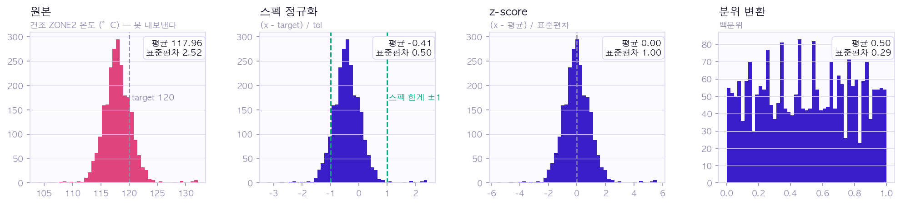
| 방식 | 중심 · 폭 | 모양 | 이럴 때 쓴다 |
|---|---|---|---|
| 스펙 정규화 | −0.41 · 0.50 | 원본 그대로 · 위치만 이동 | 스펙이 있을 때. 관리도 · Cpk 를 그대로 본다 |
| z-score | 0.00 · 1.00 | 원본 그대로 · 폭까지 맞춤 | 스펙을 모를 때. 여러 열을 같이 볼 때 |
| 분위 변환 | 0.50 · 0.29 | 평평해진다 — 모양이 바뀐다 | 순위만 보면 될 때. 회귀에는 못 쓴다 |
컬럼명은 FEAT_01 부터 다시
화성_3단계_CV_전압 같은 이름은 그 자체가 레시피다.화성_3단계_CV_전압 → FEAT_01
프레스_1호기_압력 → FEAT_02
NMP_투입비 → FEAT_03
# 매핑 표는 사내에만 둔다
# 결과를 읽을 때 이 표로 되돌린다물리량만 남기는 방법도 있다
VOLT_01 · RATIO_02 처럼 종류만 남기면 밖에서 범위 검사나 파생 변수를 같이 받기 쉽다. 대신 그 종류만큼은 흘린다 — 얻는 것과 새는 것을 견줘 고른다.
로트 번호와 타임스탬프가 흘리는 것
| 남아 있는 것 | 여기서 역산되는 것 |
|---|---|
| 공정 단계 수 | 화성 프로토콜이 몇 단인지 — 단계 수 자체가 노하우다 |
| 로트 · 시리얼 ID | 순번 증가율로 생산량. 고객사 코드가 박혀 있는 경우가 많다 |
| 타임스탬프 | 설비 간 간격에서 tact time, 시간대별 밀도에서 가동률과 capacity |
| 장비 벤더 · 모델 · 호기 수 | 라인 구성과 투자 규모 |
| USL / LSL · 수율 | 판정 기준이자 기술 수준. 수율은 경영 정보다 |
연속 · 순서 · 범주 · 식별자 · 시각
| 열의 성격 | 이 표에서는 | 반출 전 처리 | 왜 그렇게 |
|---|---|---|---|
| 연속형 · 스펙 있음 | 건조 ZONE2 온도 | (x − target) / tol | 관리도 · Cpk 가 그대로 나온다 |
| 연속형 · 스펙 없음 | 프레스 압력 | z-score | 상관 · 회귀가 그대로 나온다 |
| 연속형 · 한쪽 꼬리 | 이 표에는 없다 — 수명 · 입자 크기 | log 를 씌운 뒤 z-score | 큰 값 몇 개에 평균이 끌려간다 |
| 순서형 | 등급 A > B > C | 0 · 1 · 2 로 매긴다 | A 가 B 보다 낫다는 관계가 실제로 있다 |
| 범주형 · 몇 개뿐 | 라인 A · B | 원핫 인코딩 | 크기 관계가 없다 |
| 범주형 · 종류가 많음 | 설비 스물네 가지 | 재번호 + 빈도로 바꾸기 | 원핫으로 하면 열이 폭발한다 |
| 식별자 | 로트번호 | factorize 로 재번호 | 순번에서 생산량이 역산된다 |
| 시각 | 타임스탬프 | t0 기준 상대 시간 | 간격에서 tact time 이 샌다 |
1호기와 4호기 사이에 없는 관계
# 이렇게 두면 크기 관계가 생긴다
설비 = [1, 2, 3, 4]
# 열을 갈라 0과 1로 — 서로 대등해진다
pd.get_dummies(df['설비호기'], prefix='MC')
MC_1 MC_2 MC_3 MC_4
0 1 0 0 0
1 0 1 0 0종류가 많으면
스물네 가지를 원핫으로 갈면 열이 스물네 개 늘어난다. 이때는 재번호 + 빈도로 바꾸거나 묶어서 줄인다.
설비호기를 열 넷으로 가른 결과
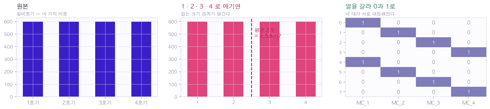
로트 번호와 시각을 지운 결과
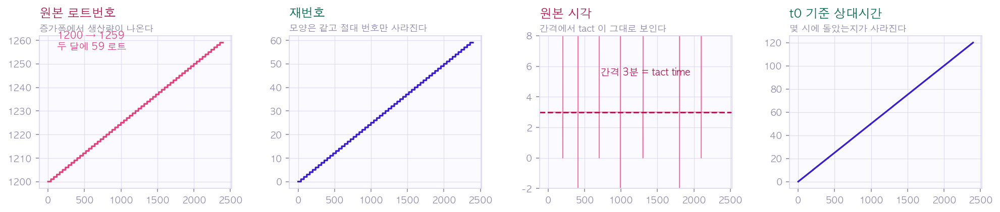
반출용 데이터프레임 만들기
RULE = {'건조_ZONE2_TEMP': ('DRY_Z2_T', 'spec', (120.0, 5.0)),
'프레스_1호기_압력': ('PRES_B1', 'z', None)}
out = pd.DataFrame(index=df.index) # 원본 df 는 여기서만 읽는다
for src, (dst, how, p) in RULE.items():
x = df[src]
if how == 'spec': out[dst] = (x - p[0]) / p[1]
elif how == 'z': out[dst] = (x - x.mean()) / x.std()out['LOT'] = pd.factorize(df['로트번호'])[0] # 순번을 지운다
out['T'] = (df['시각'] - df['시각'].min()).dt.total_seconds() / 3600정규화 데이터가 감당하는 범위
| 하려는 일 | 정규화 데이터로 | 비고 |
|---|---|---|
| SPC 관리도 · Cpk / Ppk | 된다 | 스펙 정규화하면 그대로 |
| 상관 · 회귀 · 인자 스크리닝 | 된다 | 선형변환에 불변 |
| 이상탐지 · 드리프트 · 산포 비교 | 된다 | 시간축은 상대화, 그룹 라벨은 익명화 |
| PCA · 클러스터링 | 된다 | 스케일링 방식만 일관되게 |
| 물리 타당성 검증 | 사내에서만 | 절대값이 있어야 판단이 된다 |
| 전기화학 모델 피팅 · 신규 스펙 설정 | 안 된다 | 실물리량이 필수다 |
표준편차 19.4 와 1.9 — 화씨 48행의 값
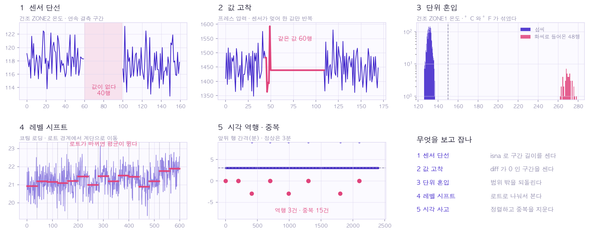
| 건조 ZONE1 온도 | 평균 | 표준편차 | z-score 를 씌우면 |
|---|---|---|---|
| 화씨 48행을 그대로 두면 | 134.2 | 19.4 | 모든 값이 열 배로 눌린다 |
| 되돌리고 나면 | 131.4 | 1.9 | 제 폭으로 나온다 |
관리도 한 장에 찍히는 UCL 과 눈금
차트
관리도 한 장에 UCL · LCL · y축 눈금 · 스펙선이 전부 찍혀 나온다.
에러 메시지
ValueError: temperature 847.2 out of range — 값이 그대로 붙어 나온다.
컬럼별 변환 규칙표
| 원본명 | 익명명 | 변환식 | 파라미터 보관 |
|---|---|---|---|
| 건조_ZONE2_TEMP | DRY_Z2_T | (x − 120) / 5 | 사내 서버 |
| 프레스_1호기_압력 | PRES_B1 | (x − μ) / σ | 사내 서버 |
| 로트번호 | LOT | 재번호 | 매핑 표 · 사내 |
| 시각 | T | t0 기준 시간 | t0 · 사내 |
국가핵심기술과 국외 유출
판단 주체
개인이 정할 사안이 아니다. 사내 보안팀 또는 산업기술보호 담당에게 먼저 확인한 뒤 진행한다.
원본 없이 코드 받기
엑셀 1,412건과 반출 금지
스키마와 값
info() · describe() 의 출력
# 값은 안 나오고 모양만 나온다
df.info()
df.describe()
df.isna().sum()RangeIndex: 1412 entries
소성온도 1412 non-null float64
입도 1300 non-null float64
수분율 1339 non-null float64
성형압력 1412 non-null float64info() 와 describe() 의 출력만 붙여 넣는다. 표 자체는 열지도 않는다.역할 · 데이터 · 할 일 · 형식
# 역할
너는 공정 데이터로 불량을 예측하는 코드를 쓰는 사람이다.
# 데이터 (값은 못 준다. 모양만 준다)
행 1412 · 열 11. 목표는 양품여부 (1 양품 · 0 불량, 불량 265건)
소성온도 float 결측0 / 입도 float 결측112 / 수분율 float 결측73
성형압력 float 결측0 범위 15.9~999.0 / 설비호기 문자 A~D
# 할 일
전처리하고 모델을 학습해 불량을 잡는 코드를 쓴다.
# 형식
바로 돌아가는 파이썬 코드로 준다. 데이터를 출력하는 줄은 넣지 마라.df.head() 를 찍는 코드를 준다.끝난 처리와 남은 처리를 갈라 적은 프롬프트
# 역할
너는 공정 데이터로 불량을 예측하는 코드를 쓰는 사람이다.
# 데이터 — 값은 못 준다. 반출본의 모양만 준다
행 2385 · 열 9. 목표는 OK (1 양품 · 0 불량, 불량 311건)
TEMP_D2 float 결측40 범위 -2.41~1.86 # 스펙 정규화 끝남
PRES_B1 float 결측60 범위 -3.02~2.98 # z-score 끝남
MC_1..MC_4 int 0/1 # 원핫 끝남
LOT int 0~59 / T float 0~119.9 # 재번호 · 상대시간 끝남
# 이미 끝난 것 — 다시 하지 마라
컬럼 가명처리 · 정규화 · 원핫 · 재번호 · 상대시간
# 남은 것 — 이것만 해라
결측 처리 · 분할 · 모델 둘 비교 · 놓친 불량 세기
# 형식
바로 돌아가는 파이썬 코드로 준다. 데이터를 출력하는 줄은 넣지 마라.전처리
읽기 → 이상치 → 결측 → 인코딩 → 분할
성형압력 999 가 18건
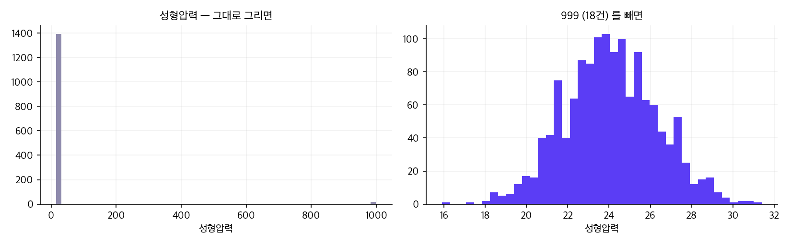
비어 있는 칸 185 개 — 입도와 수분율
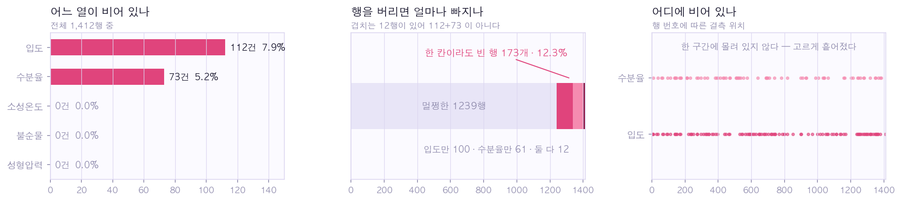
| 방법 | 언제 쓰나 | 이 데이터에서는 |
|---|---|---|
| 행을 버린다 | 결측이 적고 데이터가 많을 때 | 173행이 빠진다 — 12.3% |
| 중앙값으로 메운다 | 값이 한쪽으로 쏠렸을 때 | 입도 12.0 · 수분율 1.2 |
| 따로 표시한다 | 결측 자체가 뜻이 있을 때 | 「측정 안 함」 열을 하나 더 |
소성온도 분포와 불순물 산점도
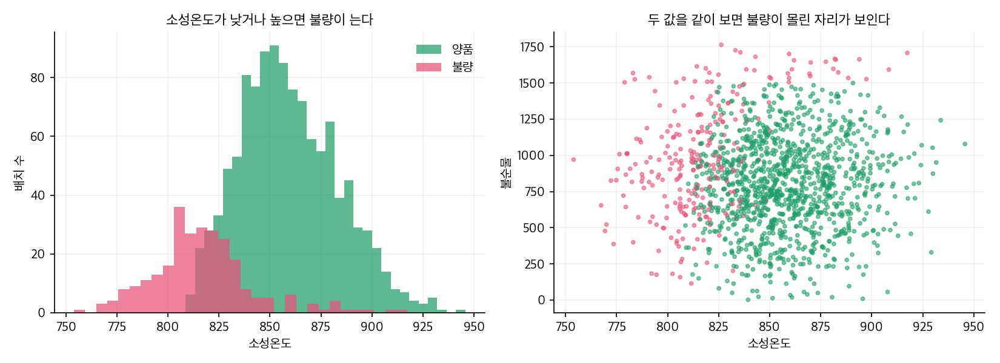
정확도 1.000 이라는 경고
예측과 검증
맞히려는 칸이 이름이면 분류, 숫자면 회귀
분류
맞히려는 칸이 몇 갈래로 나뉜 이름일 때. 양품 / 불량, 정상 / 이상.
회귀
맞히려는 칸이 이어진 숫자일 때. 방전용량 mAh/g, 수명 사이클.
| 맞히려는 칸 | 무슨 문제 | 먼저 써 볼 것 | 재는 자 |
|---|---|---|---|
| 양품여부 (0 / 1) | 분류 | 로지스틱 회귀 → 랜덤포레스트 | 재현율 · 정밀도 |
| 방전용량 (mAh/g) | 회귀 | 선형 회귀 → 그래디언트 부스팅 | MAE · R² |
| 불량 유형 (A/B/C) | 다중 분류 | 랜덤포레스트 | 유형별 재현율 |
손으로 넷, 맡기는 것은 하나
열어 볼 것과 안 열어도 되는 것
봐야 하는 것
어떤 열을 넣었나, 무엇을 맞히나, 얼마나 맞혔나, 무엇을 놓쳤나.
안 열어도 되는 것
트리가 몇 그루인지, 어떤 손실 함수인지, 어떤 방식으로 최적화하는지.
로지스틱 0.904 · 랜덤포레스트 0.966
| 정확도 | 불량 재현율 | 불량 정밀도 | |
|---|---|---|---|
| 전부 양품이라 찍기 | 0.813 | 0.000 | — |
| 로지스틱 회귀 | 0.904 | 0.667 | 0.786 |
| 랜덤포레스트 | 0.966 | 0.864 | 0.950 |
놓친 불량 9건 · 헛경보 3건
모델 파일로 남기기
model.pkl 로 갈라 두기
# 학습해서 저장 — 한 번만
model.fit(X_train, y_train)
joblib.dump(model, 'model.pkl')# 판정 — 배치마다
model = joblib.load('model.pkl')
p = model.predict_proba(row)[0][0]
판정 = '불량 위험' if p >= 0.3 else '정상'내 엑셀로 처음부터 끝까지
# 내 엑셀을 읽고
df = pd.read_excel('내파일.xlsx')
# 모양만 찍는다
df.info()
df.describe()부록의 한 줄
모양만 보낸다
열 이름 · 자료형 · 범위 · 결측 수. 값은 한 줄도 밖으로 보내지 않는다.
순서가 있다
읽고 · 고치고 · 메우고 · 펴고 · 나눈다. 나누기를 마지막에 두면 검증 데이터가 섞인다.
적은 쪽을 본다
전부 양품이라 찍어도 0.813 이다. 놓친 불량을 센다.
운영
엑셀에서 model.pkl 까지
재학습의 신호
# 지난달 판정과 실제 결과를 맞춰 본다
맞힌 비율 = (지난달판정 == 실제결과).mean()
print(맞힌 비율) # 0.9 아래로 내려가면 다시 학습